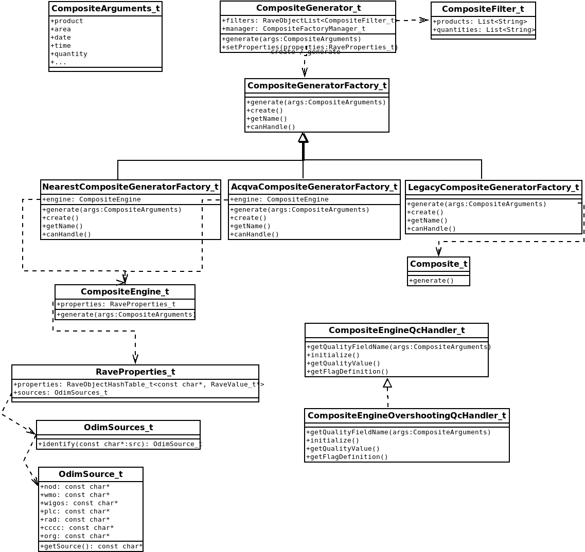

Summary
In 2025 a new approach to compositing has been added to the toolbox to simplify addition of new algorithms and also to be able to reuse code. Instead of having one compositing class (composite.c) that handles all types of compositing the new approach is to use various composite factories and various classes for passing on arguments and properties as well as different utility functions. In this first version the focus has been to get a proper structure and getting the nearest algorithms to work like before. We have kept the old legacy code which means that it still is possible to generate all previous products.
Overview
The new class hierarchy for the new compositing can be visualized according to Figure 1

Specifies where to find the feature map values used when creating the ACQVA composite. Should be a directory and files in there should be acqva featuremap files named <nod>.h5, for example seatv.ht or <nod>acqva_featuremap<YYYYmm>.h5. ACQVA will use /what/source for determining the NOD during processing and fill the volumes with the quality fields from the feature maps.
properties.set("rave.acqva.featuremap.dir", "/var/lib/baltrad/rave/featuremaps")
The content of the featuremap is described in Feature maps.
Property: rave.rate.zr.coefficients (quantity = RATE)
Individual ZR coefficients for each source used when generating RATE products. If not specified, the zr-coefficients will fall back on the Marshall - Palmer ZR coefficients.
Defined as a hash table with "source": (zr_a, zr_b).
properties.set("rave.rate.zr.coefficients", {"sella":(200.0, 1.6), "sekrn": (200.0, 1.6)})
radarcomp
The radarcomp script has been extended with a couple of arguments that will allow the user to use the new compositing factory method instead of the legacy handling. The old Composite_t handling will still be the default behavior until the factory methods has been evaluated and verified to provide the same or better support for generating composites. However, there are a couple of products that the old compositing method will not be able to handle which means that in those situations the new factory method has to be used. These are when RATE or ACQVA composites should be created.
The radarcomp has been extended with new options.
- –enable_composite_factories
Will disable the old compositing in favor for the new variant. - –strategy=[legacy|nearest|acqva] If the user wants to enfore a specific factory to override the filter handling in the CompositeGenerator_t. If not specified, then the filtering will be used.
When using the composite factories it is now also possible to specify –quantity=RATE. _factories –qc=rave-overshooting –strategy=legacy
how/camethod
When generating composites the attribute how/camethod will be added to the cartesian product so that the user know how the data has been selected. As described earlier there are number of different compositing factories delivered within RAVE and each of these will be responsible for ensuring that how/camethod is set appropriately.
Since LegacyCompositeGeneratorFactory_t uses the same code as Composite_t the table will only contain LegacyCompositeGeneratorFactory_t but the same behavior can be expected when using Composite_t directly as well.
| Factory | Product | selection_method | interpolation_method | extra | how/camethod |
|---|---|---|---|---|---|
| LegacyCompositeGeneratorFactory_t | PPI / CAPPI / PCAPPI | NEAREST_RADAR | ANY | NO QCOMP | NEAREST |
| LegacyCompositeGeneratorFactory_t | MAX / PMAX | N/A | NEAREST | NO QCOMP | MAXIMUM |
| LegacyCompositeGeneratorFactory_t | PPI / CAPPI / PCAPPI | HEIGHT_ABOVE_SEALEVEL | ANY | NO QCOMP | MDE |
| LegacyCompositeGeneratorFactory_t | PPI / CAPPI / PCAPPI | N/A | ANY | QCOMP | QMAXIMUM |
| - | - | - | - | - | - |
| NearestCompositeGeneratorFactory_t | PPI / CAPPI / PCAPPI | NEAREST_RADAR | N/A | N/A | NEAREST |
| NearestCompositeGeneratorFactory_t | PPI / CAPPI / PCAPPI | HEIGHT_ABOVE_SEALEVEL | N/A | N/A | MDE |
| NearestCompositeGeneratorFactory_t | MAX / PMAX | N/A | N/A | N/A | MAXIMUM |
| - | - | - | - | - | - |
| AcqvaCompositeGeneratorFactory_t | ACQVA | N/A | N/A | N/A | QMAXIMUM |
The LegacyCompositeGeneratorFactory_t can generate composites using the quality based compositing method that is using a specific quality flag indicator. If setting a quality flag in the composite arguments using the CompositeArguments_setQIFieldName, the QCOMP generation will be used and in that situation it the selection_method will not be used.
Generated by